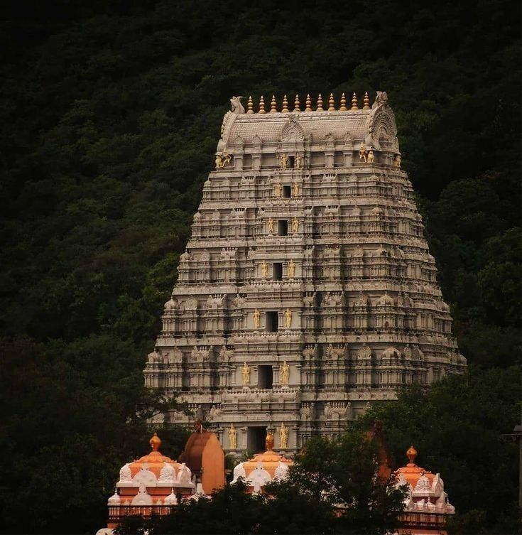
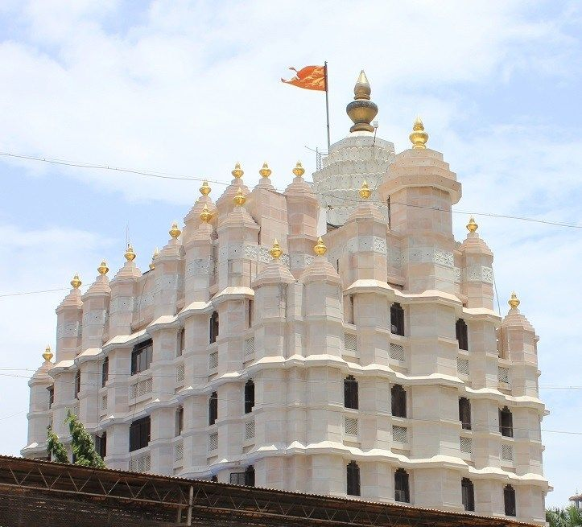

Kashi Vishwanath Temple
📍 Uttar Pradesh
Dedicated to Lord Shiva, Kashi Vishwanath is one of the twelve Jyotirlingas and among the holiest pilgrimage sites in India.

Tirupati Balaji Temple
📍 Andhra Pradesh
One of the richest and most visited temples in the world, dedicated to Lord Venkateswara.
Mahakaleshwar Temple
📍 Ujjain, Madhya Pradesh
One of the twelve sacred Jyotirlingas dedicated to Lord Shiva, the Mahakaleshwar Temple is renowned for its unique Bhasma Aarti and centuries-old spiritual significance.

Golden Temple
📍 Amritsar, Punjab
Also known as Harmandir Sahib, the Golden Temple is the holiest shrine of Sikhism, admired for its golden architecture, peaceful surroundings, and the world's largest free community kitchen (Langar).

Siddhivinayak Temple
📍 Mumbai, Maharashtra
Dedicated to Lord Ganesha, Siddhivinayak Temple is one of India's most visited temples and is especially revered for fulfilling the wishes of devotees from across the country.
Kedarnath Temple
📍 Rudraprayag, Uttarakhand
Nestled in the Himalayas, Kedarnath Temple is one of the holiest shrines dedicated to Lord Shiva and forms an important part of the Char Dham Yatra.